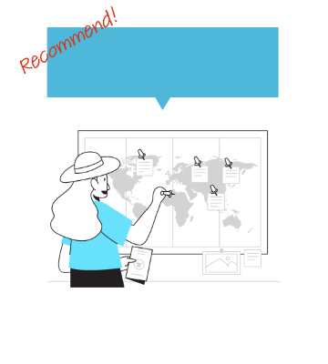
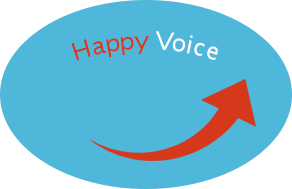
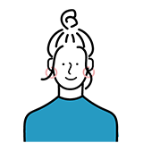

Sinsahとは?
TOEICスコア900以上獲得を最短で実現し
「自分の可能性を広げたい」方への学習プログラムです。
就職や転職で
新たなことに挑戦したい!
自分に自信を持ちたい!

憧れの海外で生活したい!

SinsahでTOEICスコア900点以上ゲットできました!

A.Yさん(21)
スコア:680→960
英語に苦手意識がありましたがプログラム通りに勉強して目標を達成できました!自分に自信を持てた気がします。
R.Kさん(32)
スコア:800→920
将来海外で仕事をするためのスキルアップで受講。最短で目標点数をゲットでき、新たな一歩が踏み出せそう!
M.Tさん(45)
スコア:490→910
新しいことに挑戦したくて受講。動画がわかりやすくて毎回見るのが楽しみでした。
Solutions
TOEICスコア900点以上を目指す人が抱える
3つの不安
01効果的な勉強法がわからない
そんな人にこそSinsahはおすすめです。実際に0から英語学習を始めてTOEICスコア970点を取った経験者が作ったプログラムなので、迷うことなくポイントをしっかり押さえて学習することができます。
02700～800点台からスコアが上がらない
900点は本質の英語力を上げないとなかなか取るのが難しいです。SinsahはTOEICに特化した攻略法に加えて、この本質の英語力向上を実現する教材です。
また、自分の弱点を把握し対策することもスコアUPにつながります。Sinsahのカリキュラム内には、弱点分析テストがあるので活用することでスコアUPを狙えます。
また、自分の弱点を把握し対策することもスコアUPにつながります。Sinsahのカリキュラム内には、弱点分析テストがあるので活用することでスコアUPを狙えます。
03続けられなさそう・挫折しそう
継続には「楽しい」という気持ちが必要不可欠です。Sinsahでは学習の達成度や成長度がわかるシステムになっています。学習前からこれだけ伸びた!と視覚化し、モチベーションを保ちます。
▼ ▼ ▼
でも、本当に
自分にできるか不安…
無料 お試し教材プレゼント!
実際の教材の「TOEIC Part1・Part2攻略法」を
無料でお試しすることができます。
▼ ▼ ▼
Point01
弱点分析テストで
対策ポイントが
わかる
Point02
頻出単語1,000語と
そのリスニング練習が
できる!
Point03
動画解説で
わかりやすい